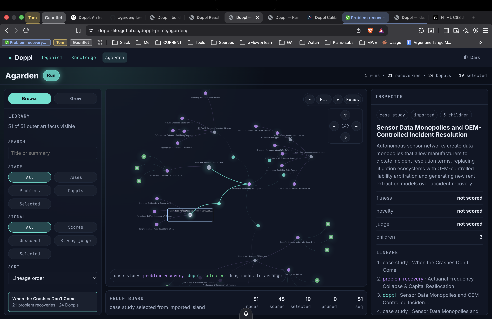
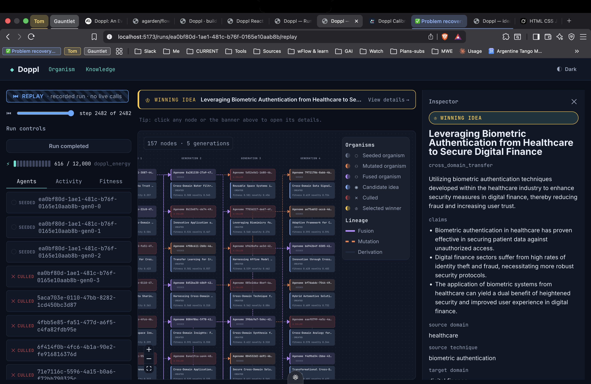
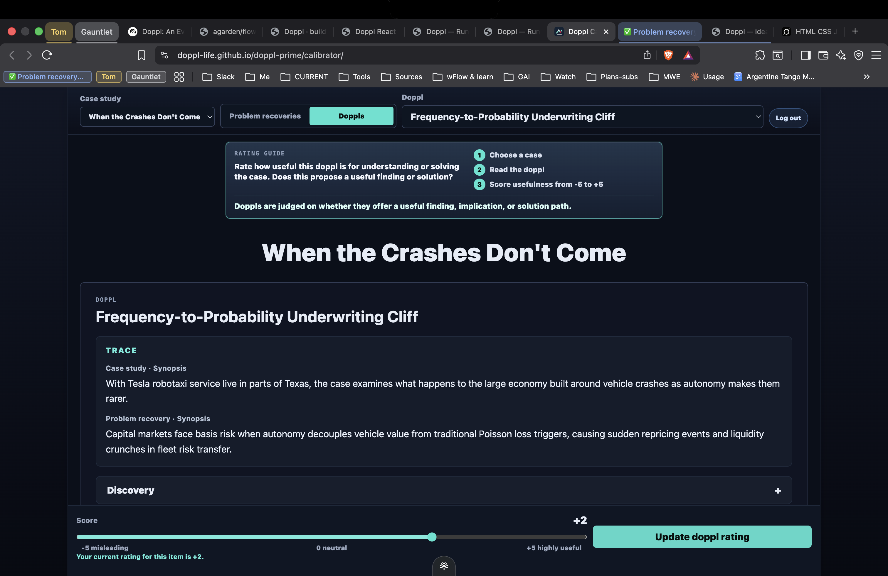

When the Crashes
Don't Come
Cost per mile collapses. Fewer wrecks, fewer injuries, fewer lives lost. They're right — that part is real, and it matters.
But that's where they stop.
The question I don't hear is —
What happens when the crashes don't come?
But the pundits stop there. Follow it all the way down. What happens when America's accident economy collapses?
- 01Personal-injury & DUI lawno more cases
- 02ER trauma units · nurses · paramedicsgone
- 03The traffic stop · probable cause · the pretextfalls away
- 04Red-light cams · speed-trap towns · municipal budgetsgone
- 05Long-haul trucking · the truck stops · the towns built on themgone
- 06Auto parts · body shops · salvage yards · whole supply linesreshuffled
- 07Insurers · adjusters · actuaries · claims orgsgone
This all adds up to something. This means something.
This is coming. All this adds up to something. This means something. (finger up) What does it all mean? (sweep the finger across the room, land on the screen) Anybody got any ideas?
Let me put Doppl
on your radar.
Doppl ≈ Doppler — the thing you hear before it arrives. The cascade was the shift. Doppl is the source.
Seed it with a case study and it breeds ideas under selective pressure. Generate · score · select · survive · mutate · fuse — generation after generation.
Each run grows a population of evolving idea-organisms. Idearganisms.
Doppl is an agentic-evolution runtime. You seed it with a scenario worth exploring, and it breeds ideas under selective pressure. Not one agent guessing — a population. Generate, score, select, survive, mutate, fuse. Until what remains is stronger than what came before. Each run grows a living lineage of idea-organisms. Idearganisms.
It looks like life
growing. Because
structurally, it is.
Every dot is an idea. Every line is a lineage — which idea came from which. One seed becomes a population; the strong fuse and breed, the weak get culled.

The spine is simple: a case study becomes a recovered problem, a recovered problem becomes a doppl — and after the doppl, the path points out of the system, to you.
A solution.
A rock star, a superyacht, paparazzi drones circling the deck. Every obvious move — shoot it down, jam it — is a worse problem than the photo. So Doppl recovers the real problem: not "defeat the drone," but "make the footage worthless."
The fix is a song. A private cue over the speakers. Everyone drifts inside. The drone films an empty deck and goes home with nothing.
An unlock.
"Self-driving works." That isn't an answer to a question — it's a key. It opens insurance. Freight. Policing. Municipal budgets. What land is even for.
One understanding, and a hundred fields move at once. That's the cold open you just sat through — Doppl, run ahead of time.
And sometimes you don't get a solution, you get an unlock. "Self-driving works" isn't an answer — it's a key. Insurance, freight, policing, what land is for. One understanding, a hundred fields move. Divergence. That's the entire cold open — that was Doppl, run ahead of time.

One engine.
One thing.
A held-out judge with a fixed rubric the organisms can't touch. They can get better. They cannot cheat. Gen N+1 beats Gen N — graded by a judge it can't bribe.
And there's a floor it cannot move: a held-out judge, outside the breeding loop, holding a rubric the organisms are never allowed to touch. They can get better; they cannot cheat. So the proof is almost rude in how simple it is — generation N+1 beats generation N, graded by a judge it can't bribe.
How do you build an organism that breeds its own ideas — and still can't game its own report card?
The thing the world venerates was never the idea. It's the zero-to-one mindset — the taste to know which idea is real, and the work to prove it. We're automating the discipline. Not the dreaming.
Because the thing the world actually venerates was never the idea. It's the zero-to-one mindset — the taste to know which idea is real, and the work to prove it out. That was supposed to be the rare part. We're automating it. Not the dreaming — the discipline. The marginal cost of a defensible idea, heading for zero.
Ask.
Bring the question worth exploring.
Enact.
The only arrow left with skin in the game.
The pipeline does everything in the middle. The machine took the thinking and politely left you the consequence. At the recovered problem and the finished doppl, it stops and nudges you toward a real move in the real world.

The team rates doppls on a slider — worthless to highly useful. The floor is fixed; the taste is crowdsourced.
That last arrow is the only one with skin in the game. The machine did the thinking; it politely left you the consequence — and we treat that as a feature. And the judgment of whether an idea is any good, we don't lock inside the machine either. This is the Agora: the team rates doppls on a slider, and the held-out judge calibrates against real human taste. The floor is fixed; the taste is crowdsourced.
PSaaS — also known as…
Pizzazz.
The oldest market there is. McKinsey, the consultancies — they always sold exactly this. The one thing they never had was a way to make it scalable and reproducible. That's us.
Remember the dominoes? That whole collapsing Probleconomy isn't the bad news. It's the map. The dominoes are the market. And the opportunity is the cascade.
And it's a real market — the oldest one there is. McKinsey, the consultancies have always sold exactly this. The only thing they never had was a way to make it scalable and reproducible. That's the part that was missing. That's us.
Remember those dominoes from the cold open? That whole collapsing problem-economy — the Probleconomy — isn't the bad news. That's the map. The dominoes are the market. And the opportunity is the cascade.
Take Doppl.
Make it yours.
Automate the ideate; get busy getting out in the world. With Doppl on your radar, you won't need to worry about the answer.
(finger up — sweep to the back of the room) Anybody got any questions?
All you need…
is a great question.